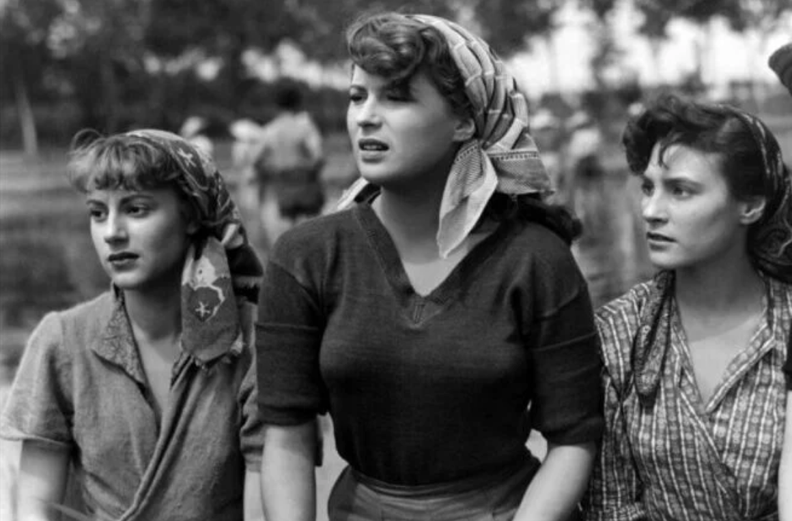

Es una corriente de cine que viene del realismo poético, la propuesta de filmar lo natural y lo real, surge de la las condiciones de la Italia de la segunda guerra mundial, no había dinero, no había comida, por tanto, el acceso a la cultura no era un tema sencillo, eso hacía que los nuevos cineastas, escritores, periodistas, fueran más críticos, repensando las historias que para ellos debían de ser contadas; este periodo mostró una humanidad desesperanzada en la que el aferrarse a lo poco que les había quedado generaba individualismo, un desinterés hacia el otro, eso motivo a la búsqueda de generar consciencia social por medio de mostrar lo auténtico, y real con un estilo más documental. En una época con tan poco dinero la producción de películas era comunitaria, entre grupos de amigos; el punto era seguir creando películas que como menciona Cesare Zavattini “no haya diferencia entre la vida cotidiana y lo que sucede en pantalla”, el ver al otro es el inicio de la empatía y la consciencia social, a través de la consciencia social es como pueblo, en comunidad podemos hacer un cambio.
